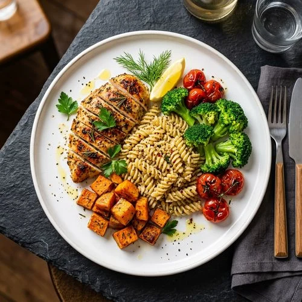

لم يكن جسدك يوماً بحاجة إلى تجويع..
كان بحاجة فقط لاستعادة نغمته الحيوية الأصلية
في واحة نور، نوقف الصراع الدامي مع الميزان والسعرات. نعيد ضبط هرمونات الجوع والتوتر من جذورها، ليعود جسدك إلى طبيعته الفطرية: حارق للدهون، هادئ الأعصاب، ومليء بالطاقة الحقيقية.
قوس الساعة البيولوجية:
أين يفشل الدايت التقليدي، وكيف تشفيك واحة نور؟
حرك المقبض الزمني عبر ساعات اليوم لترى الاختلاف الفارق في نشاطك، كورتيزولك، وجوعك بين الإرهاق القديم والاستشفاء المتجدد.
انهيار الطاقة وخمول ما بعد الغداء
هبوط حاد في جلوكوز الدم نتيجة وجبة غير متوازنة، يتبعه اندفاع جارف نحو السكريات والكافيين للمقاومة، وارتفاع هرمون الكورتيزول لتعويض نقص الطاقة.
صفاء ذهني وطاقة متقدة مستمرة
تثبيت منحنى الجلوكوز بوجبة مشبعة ذكية؛ الجسم يعتمد على حرق الدهون الطبيعي، طاقة صافية متصلة بدون أدنى خمول وبدون حاجة لمنبهات إضافية.
ماذا يحدث لخلاياك عندما نكسر
مقاومة الأنسولين بيولوجياً؟
الدهون العنيدة ليست دهوناً لا تستطيع حرقها؛ هي دهون محبوسة خلف أقفال خلوية مغلقة بفعل الالتهاب المزمن. عندما نعيد حساسية المستقبلات، تفتح الخلية بواباتها وتتحول الدهون إلى طاقة نظيفة.
المفتاح الهرموني: الأنسولين لم يعد يصرخ على أبواب الخلية بمستويات سامة، بل يهمس بنعومة فتستجيب فوراً.
انبعاث الـ ATP: الميتوكوندريا تستعيد كفاءتها لحرق الأحماض الدهنية كوقود أساسي، لتشعر بالخفة والنشاط تلقائياً.
طاولة التفكيك التوليفي:
أطباق بيتنا المشبعة تصبح سلاحك الأقوى للاستشفاء
في واحة نور لا نمنعك من لحم الخروف، ولا من طواجن المطبخ العربي الغنية؛ بل نعيد هندستها كيميائياً لتخدم هرمونات الشبع واستقرار الإنسولين.

لحوم طازجة، أسماك مشوية، ودواجن متبلة بذكاء
تحفز هرمونات PYY و GLP-1 الطبيعية لتبعث إشارة شبع حقيقية لمركز الشهية في المخ، لتنسى رغبة النقرشة العشوائية نهائياً.
زيت زيتون بكر، أفوكادو، طحينة سمسم صافية
تمنح طاقة مستقرة بطيئة الاحتراق دون أن ترفع إفراز الأنسولين بمقدار واحد، مما يبقي مسار حرق الدهون مفتوحاً بلا انقطاع.
خضار ورقية، أعشاب جبلية، وتوابل مضادة للأكسدة
تهدئ بطانة الأمعاء، تقضي على الانتفاخات، وتمنحك هضم مريح وخصر منكمش دون غازات أو ثقل مزعج.
مرآة التحرر النفسي:
من قفص الحرمان وجلد الذات إلى السكينة المطلقة
أكبر عائق أمام ثبات وزنك لم يكن الأكل يوماً؛ كان التوتر، الخوف من المناسبات، واللوم المستمر في المرآة. شاهد التحول الشعوري الذي تصنعه واحة نور في روحك قبل جسدك.
"أجلس في عزائم أهلي ومناسبات أحبابي دون خوف أو حرج.. آكل بمتعة وعقلي هادئ تماماً."
اختفى وسواس حساب كل جرام وحبة تمر. أصبح الميزان مجرد رقم عابر، وملابسي تتسع بأناقة كل أسبوع لأن جسدي لم يعد خائفاً، بل يشعر بالأمان الكامل للتخلي عن مخازن الدهون العنيدة.
ملف الحالات الحقيقية بالأرقام:
أرقام تحاليل لا تكذب ونتائج مثبتة بالدليل الطبي
انقر لتقليب الحالات السريرية في الإضبارة لمشاهدة تحسن تحاليل الدم ومحيط الخصر قبل وبعد واحة نور.
د. ريم • 34 سنة • طبيبة باطنية
"حالة د. ريم أثبتت أن زيادة الوزن لم تكن يوماً قلة انضباط، بل كانت صرخة استغاثة من هرمونات المبيض ومقاومة الأنسولين. بمجرد رفع الإجهاد وتطبيق بروتوكول واحة نور، انتظمت دورتها وتراجع الوزن تلقائياً وبلا رجعة."
صمم باقتك الاستشفائية الخاصة:
برنامج يناسب دوامك وظروفك دون تجديد إجباري
أجب عن 3 محددات سريعة ليقوم نظامنا باقتراح الباقة الأنسب لجسمك وميزانيتك فورياً.
باقة Pro المتقدمة (الأكثر اكتمالاً)
الخيار الأمثل لروتينك؛ تشمل خطة مخصصة 100% لأكلات بيتك، شات يومي مباشر مع الكوتش، مكالمات تقييم أسبوعية، ومتابعة دقيقة لكسر مقاومة الأنسولين خطوة بخطوة.